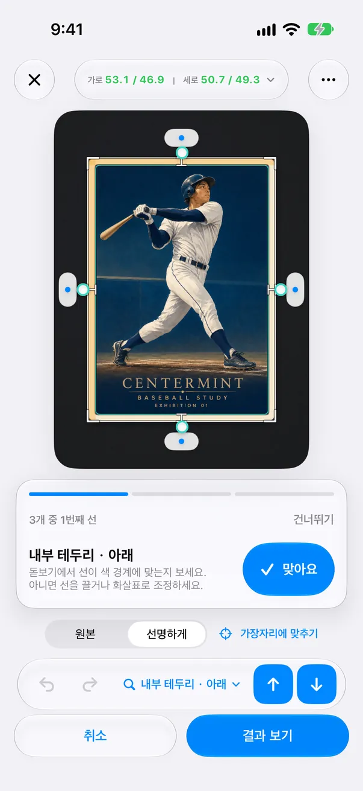
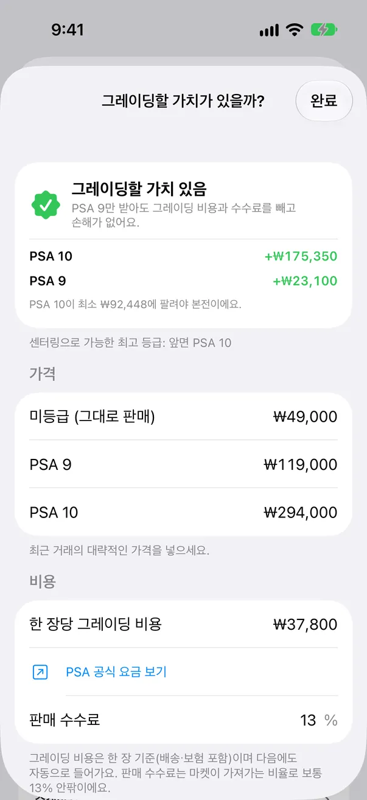
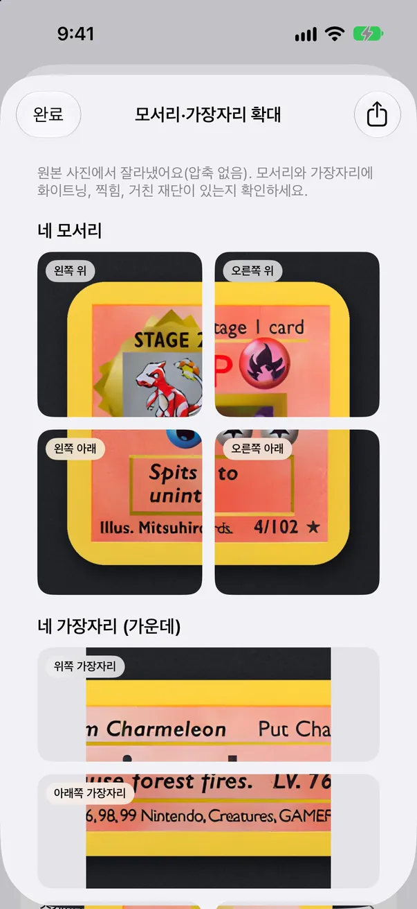
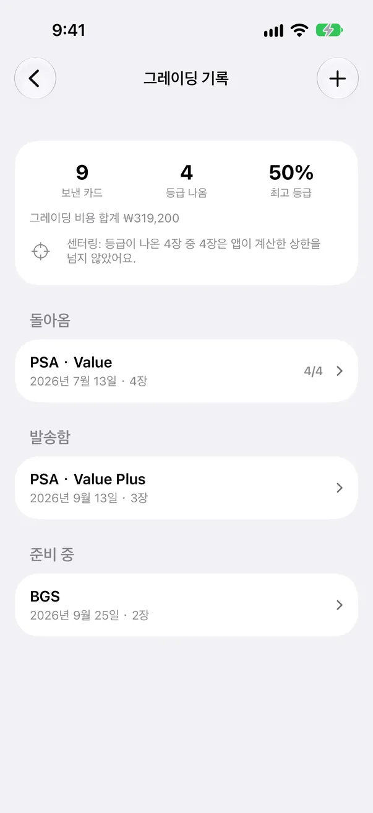
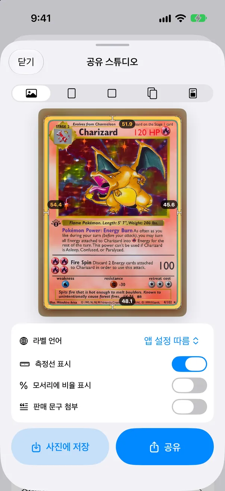

선 하나씩 확인 무료
다시 볼 선이 있으면 가장 불확실한 선부터 하나씩 안내합니다. 확대경이 해당 선으로 자동 이동하고, “맞아요”를 누르면 다음 선으로 넘어갑니다. 어긋났다면 끌어서 바로잡으세요.
확인이 필요한 이유 무료
반사, 흔들림, 어두운 사진, 낮은 해상도, 카드 가장자리와 색이 비슷한 매트, 인쇄 테두리를 찾지 못함 등 이유를 한 문장으로 알려 줍니다. 다시 찍으면 해결되는 경우엔 그렇게 안내합니다.

여백을 재고, 앱이 확신하지 못하는 선을 하나씩 확인한 뒤, 그레이딩 비용을 낼 가치가 있는지 판단하세요.

CenterMint는 트레이딩 카드와 스포츠 카드 수집가를 위한 iPhone 앱입니다. 슬리브에서 꺼낸 카드 사진으로 좌우·상하 센터링을 측정하고, PSA·BGS·CGC가 공개한 센터링 기준과 비교해 그레이딩 비용을 내기 전에 판단하도록 돕습니다. 독립 도구로, 센터링만 측정하며 전체 등급을 예측하지 않습니다.
다시 볼 곳을 알려 주는 측정
1 / 5 단계
카드를 슬리브에서 꺼내 테두리와 색이 다른 무지 매트 위에 평평하게 놓고, 고른 조명에서 촬영하거나 사진·스캔을 불러옵니다.
자동 측정은 슬리브 없는 카드만 됩니다. 슬리브, 탑로더, 그레이딩 케이스에 든 카드는 네 변을 직접 맞춰 측정합니다. 슬리브가 감지되면 알려 주고 수동 맞춤으로 전환합니다.
2 / 5 단계
CenterMint가 카드 바깥 가장자리와 인쇄된 안쪽 테두리를 제안합니다. 불확실한 선이 있으면 확대경으로 하나씩 안내하고 이유를 알려 줍니다.
슬리브에서 꺼낸 카드는 자동 측정. 금색·은색 테두리는 변마다 서브픽셀 단위로 맞추고, 천이나 무늬 매트 위에서도 바깥 테두리를 더 정확히 찾습니다.
3 / 5 단계
각 선을 확인하거나 조금 옮깁니다. 좌우·상하 비율이 바로 갱신됩니다.
확대경 2.0: 실제 픽셀, 픽셀 격자, 가장자리 밝기 곡선을 보여 주고 마주 보는 변을 함께 비교할 수 있습니다.
무료 버전에서도 측정에는 항상 원본 해상도 사진을 사용합니다.
4 / 5 단계
뒷면도 측정하고 앞뒷면을 각각 PSA, BGS 또는 CGC 기준과 비교합니다.

5 / 5 단계
제출 전에 모서리·가장자리 확대를 살펴보고, 최근 판매 가격으로 ‘그레이딩할 가치가 있을까?’를 계산합니다.
1.9에서는 돈이 드는 결정, 즉 이 카드를 그레이딩에 보낼 가치가 있는지를 돕는 기능을 더했습니다.
버전 1.9 새 기능
다시 볼 선이 있으면 가장 불확실한 선부터 하나씩 안내합니다. 확대경이 해당 선으로 자동 이동하고, “맞아요”를 누르면 다음 선으로 넘어갑니다. 어긋났다면 끌어서 바로잡으세요.
반사, 흔들림, 어두운 사진, 낮은 해상도, 카드 가장자리와 색이 비슷한 매트, 인쇄 테두리를 찾지 못함 등 이유를 한 문장으로 알려 줍니다. 다시 찍으면 해결되는 경우엔 그렇게 안내합니다.

미그레이딩, PSA 9, PSA 10 판매 완료 가격(BGS·CGC도 지원)과 그레이딩 비용, 판매 수수료를 입력하면 그대로 팔 때보다 얼마나 이득 또는 손해인지, PSA 10이 얼마 이상에 팔려야 본전인지 보여 줍니다. 센터링으로 받을 수 없는 등급은 자동으로 제외됩니다. 가격은 직접 입력하며, 일본에서는 메루카리·야후 옥션 판매 완료 목록을 한 번에 열 수 있습니다.

원본 사진에서 네 모서리와 네 변의 가운데를 원래 해상도로 잘라 화이트닝과 찍힘을 확대해 볼 수 있고, 한 장으로 묶어 공유할 수 있습니다. 보여 줄 뿐, 모서리나 표면에 점수를 매기지 않습니다.


리자몽 사진에서 원래 해상도로 잘라 낸 네 모서리와 네 가장자리입니다. 화이트닝은 직접 판단하세요. 앱은 점수를 매기지 않습니다.

언제 어떤 카드를 보냈는지, 비용, 돌아온 등급을 기록하세요. 최고 등급 비율, 총 그레이딩 비용, 실제 등급이 앱이 측정한 센터링 상한 안에 있었는지 확인할 수 있습니다.

공유 이미지는 카드 사진이 중심이며, 로고는 오른쪽 아래에 작게만 들어갑니다.

일괄 2.0 (Pro): 연속 촬영으로 대기열에 넣고, 확인이 필요한 카드만 보고, 센터링 순으로 정렬해 한 번에 저장합니다. 결정 도우미가 카드를 ‘제출·먼저 보완·목표 미만’으로 나누고 제출 목록 PDF를 내보냅니다.
제출 목록 PDF
카드를 스캔하고, 확대경으로 선을 하나씩 확인하고, 그레이딩 비용이 남는지 계산하고, 모서리를 본 뒤 제출을 기록합니다.
앱 화면을 단순하게 옮겨 브라우저에서 바로 그립니다. 숫자는 앱이 이 리자몽을 측정한 결과이고 가격은 예시입니다.

Pro는 월간·연간 구독과 한 번 구매로 제공되며, 요금제와 현지 가격은 앱에 표시됩니다. 구독은 Apple 계정 설정에서 취소할 때까지 자동 갱신됩니다.
측정은 iPhone 안에서 이루어지며 계정이 필요 없습니다. 사진은 직접 동의한 경우에만 기기 밖으로 나갑니다. 수정 공유는 기본적으로 꺼져 있고, 일괄 가져오기 전에는 한 번 묻고 거절할 수 있습니다. 입력한 가격과 그레이딩 기록은 기기에만 저장됩니다. 자세한 내용은 개인정보 처리방침을 확인하세요. 개인정보 처리방침 (영어)
앱은 한국어, 영어, 일본어, 베트남어, 중국어 간체 및 번체를 지원합니다.
자동 측정은 꺼낸 카드만 지원합니다. 슬리브나 탑로더, 케이스는 자체 가장자리와 반사가 있어 카드 대신 플라스틱을 재게 됩니다. 슬리브가 감지되면 알려 주고 수동 맞춤으로 전환되니 네 변을 직접 맞추세요. 가장 정확한 결과를 원하면 카드를 꺼내 다시 찍으세요.
사진 품질과 확인한 선에 따라 달라집니다. 차이는 아주 작습니다. 좌우 여백이 각각 3mm인 카드라면 50/50과 55/45의 차이는 0.3mm뿐입니다. CenterMint는 금색·은색 테두리를 변마다 서브픽셀 단위로 맞추고 불확실한 선을 표시하지만, 하나의 정확도 수치를 내세우지는 않습니다. 표시된 선은 확대경으로 확인하고 흐리거나 반사가 있는 사진은 다시 찍으세요.
PSA가 공개한 Gem Mint 10 기준은 앞면 약 55/45 이내, 뒷면 75/25 이내입니다. PSA 9는 앞면 약 60/40, 뒷면 90/10입니다. BGS와 CGC는 각자 기준을 공개하며 일부 수치는 특정 카드 종류에만 적용됩니다. 센터링은 여러 평가 항목 중 하나이므로 센터링이 좋아도 등급이 보장되지 않습니다. 제출 전 공식 페이지를 확인하세요.
등급마다 ‘추가 수익 = (그레이딩 후 가격 − 미그레이딩 가격) × (1 − 판매 수수료) − 그레이딩 비용’을 계산합니다. 판매 수수료는 그대로 팔든 그레이딩 후 팔든 내므로 가격 차이에만 적용합니다. 본전이 되는 최고 등급 가격은 ‘미그레이딩 가격 + 그레이딩 비용 ÷ (1 − 판매 수수료)’입니다. PSA 9 같은 한 단계 아래 등급에서도 이득이면 ‘가치 있음’, 최고 등급에서만 이득이면 모서리와 표면에 달렸다고 안내하고, 어떤 등급도 이득이 아니거나 센터링 때문에 이득 보는 등급이 불가능하면 ‘추천하지 않아요’로 표시합니다. 10등급 확률은 추정하지 않습니다.
아니요. eBay나 가격 서비스와 연동하지 않으며 가격을 추측하지 않습니다. 최근 판매 가격은 직접 입력하고 카드별로 기기에 저장됩니다. 일본에서는 카드 이름과 번호로 메루카리 판매 완료·야후 옥션 낙찰 목록을 여는 버튼이 있습니다.
평가하지 않습니다. ‘모서리·가장자리 확대’는 원본 사진에서 네 모서리와 네 변을 원래 해상도로 잘라 직접 확인하게 해 주는 기능입니다. 휴대폰 사진은 아주 작은 흠을 놓칠 수 있으니 의심되는 부분은 루페와 밝은 조명으로 다시 보세요.
무료: 원본 해상도 센터링 측정, 확대경, 선 하나씩 확인, PSA·BGS·CGC 기준 비교, 최대 5장 일괄 측정 1회, 원하는 카드 1장으로 그레이딩 전 확인(그레이딩할 가치·확대 보기). Pro: 모든 카드에서 그레이딩 전 확인, 그레이딩 기록, 일괄 스캔, 제출 목록 PDF가 있는 결정 도우미, CSV·4K 내보내기, 프리셋, 광고 없음.
아니요. CenterMint는 독립 앱이며, 센터링 기준은 각 회사가 공개한 기준을 비교용으로 보여 줄 뿐입니다. 실제 등급은 다를 수 있습니다.
측정은 iPhone 안에서 계정 없이 이루어집니다. 수정 공유(기본 꺼짐)를 켜거나 일괄 가져오기 때 한 번 나오는 안내에 동의한 경우에만 사진이 업로드되며, 거절할 수 있습니다. 가격과 그레이딩 기록은 기기에만 저장됩니다.